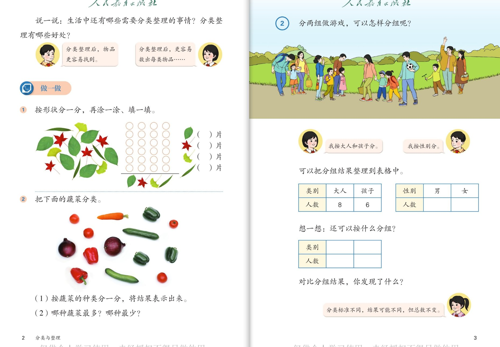
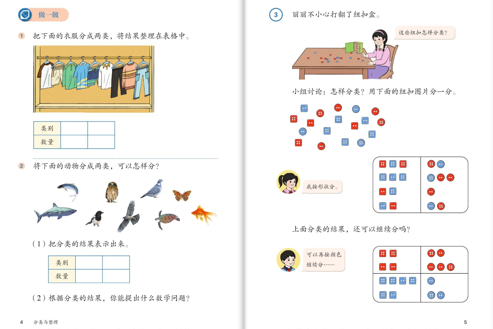
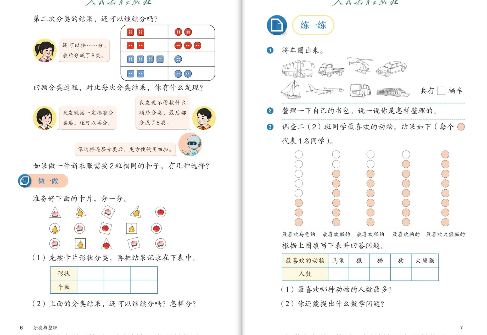
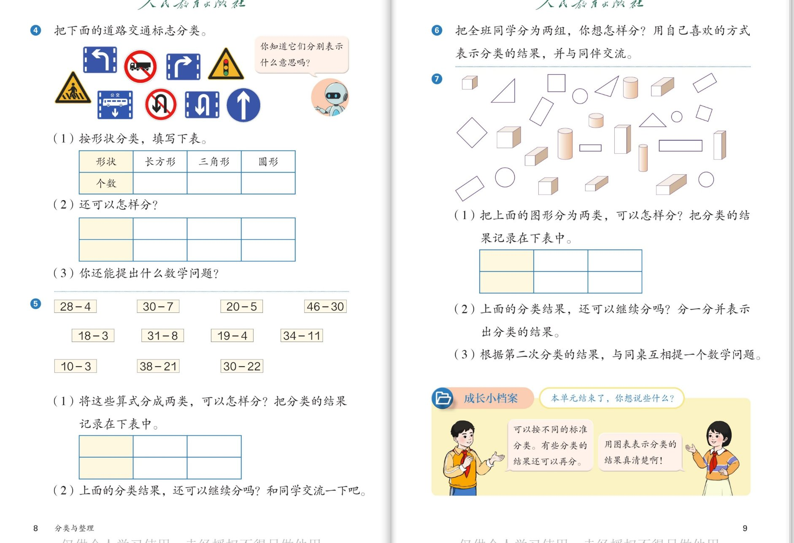

📘 分类与整理 · 一图片一解析
人教版《数学》二年级上册 · 第一单元（课本第 1～9 页）
17总题数
7认知层
7强化层
3拓展层
🧠 认知层 · 会按标准分一分
💪 强化层 · 会整理、能发现
🚀 拓展层 · 联系生活、总结方法
👨👩👧 使用建议：本组共 17 个问题，按"一图片一解析"排版——每张教材图在上，它对应的提问与解析在下方。本单元重难点：自己确定分类标准、把结果整理成图表、体会"标准不同结果不同但总数不变"、学会逐层分类。点击问题卡片在图下方展开/收起解析；每层可点「✓我会了」做自我记录。
1
🧺 分类与分组（全景）
课本第 2～3 页
📖 课本第 2～3 页 · 说一说 / 分组游戏
👇 本图解析（点问题在下方展开 / 收起答案） · 分类标准 · 分组游戏
🧠 认知层会按标准分组
🎈
认知：分两组做游戏，两个小朋友分别想怎样分组？
看答案
解析：
- 女生：按大人和孩子分
- 男生：按性别分（男 / 女）
💪 强化层会算、会发现
🧮
强化 1：按大人孩子分，大人 8 人、孩子 6 人，一共有多少人做游戏？
看答案
解析：
- 8 + 6 = 14（人）
🔍
强化 2：对比"按大人孩子分"和"按性别分"的结果，你发现了什么？
看答案
解析：
- 分类标准不同，结果可能不同
- 但不管怎么分，总数不变（都是 14 人）
🚀 拓展层联系生活
🌈
拓展：说一说，分类整理有哪些好处？（对应课本"说一说"）
看答案
解析（不唯一）：
- 分类整理后，物品更容易找到；也更容易数出每类物品有多少
- 生活中：整理书包、衣柜、玩具架、图书角……
2
✏️ 做一做：树叶与蔬菜
课本第 2 页
📖 课本第 2 页 · 做一做特写：树叶按形状分 / 蔬菜分类
👇 本图解析（点问题在下方展开 / 收起答案） · 按形状分 · 按种类分
🧠 认知层会按标准分一分
🍃
认知 1：做一做 1，把树叶按形状分一分，可以怎样分？分完数一数。
看答案
解析：
- 按形状分：圆形叶子、其他形状的叶子
- 再涂一涂、填一填，数出每类各有几片
🍅
认知 2：做一做 2，把蔬菜分类，可以按什么标准分？哪种最多、哪种最少？
看答案
解析：
- 按种类分：西红柿、黄瓜、青椒、洋葱、胡萝卜
- 数一数、比一比，就知道哪种最多、哪种最少
3
🧷 纽扣盒里的分类
课本第 4～5 页
📖 课本第 4～5 页 · 做一做 / 例3 纽扣分类
👇 本图解析（点问题在下方展开 / 收起答案） · 先按一个标准分 · 逐层分类
🧠 认知层先按一个标准分
🔴
认知 1：丽丽不小心打翻了纽扣盒，可以先用什么标准把纽扣分一分？
看答案
解析：
- 可以按形状分：方形纽扣、圆形纽扣
- 也可以先按颜色分：红色、蓝色（标准不唯一）
🟦
认知 2：按形状分完以后，分类的结果还可以继续分吗？
看答案
解析：
- 可以。再把每类按颜色分：红色、蓝色
- 这样就越分越细、越分越清楚
💪 强化层体会逐层分类
🧷
强化：像这样先按形状、再按颜色一层一层地分，叫"逐层分类"。逐层分类有什么好处？
看答案
解析：
- 逐层分类后，纽扣分得又细又清楚，更方便使用
- 比如做新衣服时，能很快找到需要的 2 粒相同的扣子
4
🔁 分类的发现与练一练
课本第 6～7 页
📖 课本第 6～7 页 · 逐层分类的发现 / 做一做 / 练一练 1～3
👇 本图解析（点问题在下方展开 / 收起答案） · 发现规律 · 圈车 · 整理书包
🧠 认知层按形状分卡片
🃏
认知：做一做，先按卡片的形状分类，可以怎样分？把结果记录在表格里。
看答案
解析：
- 按卡片上的图案形状分：桃、梨、苹果
- 把每类个数记录在表格中，一目了然
💪 强化层发现规律、会判断
🔁
强化 1：回顾纽扣分类：不管按什么顺序分，最后都分成了 8 类。你有什么发现？
看答案
解析：
- 按一定标准分类后，还可以再分
- 只要标准确定，不管按什么顺序分，最后结果都一样（都是 8 类）
🚗
强化 2：练一练 1，将车圈出来。哪些不是车？共有几辆车？
看答案
解析：
- 不是车的：直升机、帆船、飞机、轮船
- 是车的：公交车、货车、小汽车、面包车，共有 4 辆车
🚀 拓展层动手整理
🎒
拓展：练一练 2，整理一下自己的书包。说一说你是怎样整理的。
看答案
解析（不唯一）：
- 按科目分：数学书放一起、语文书放一起……
- 也可以按大小分、按常用和不常用分
5
🏁 练一练 · 我会应用
课本第 8～9 页
📖 课本第 8～9 页 · 练一练 4～7 / 成长小档案
👇 本图解析（点问题在下方展开 / 收起答案） · 标志分类 · 算式分类 · 成长小档案
🧠 认知层给标志分类
🚦
认知：练一练 4，把下面的道路交通标志分类，可以按什么标准分？
看答案
解析：
- 按形状分：长方形、三角形、圆形
- 还可以按颜色分：蓝色、黄色、红色、白色
💪 强化层给算式和图形分类
➗
强化 1：练一练 5，把这些减法算式分成两类，可以怎样分？
看答案
解析（不唯一）：
- 分法一：按减数是一位数还是两位数分，如 28−4、30−7 是减一位数，46−30、34−11 是减两位数
- 分法二：按是否需要退位分，如 30−7、20−5、31−8、10−3 要退位，28−4、18−3、19−4 不用退位
🔷
强化 2：练一练 7，把上面的图形分为两类，可以怎样分？还可以继续分吗？
看答案
解析：
- 分为平面图形和立体图形两类
- 立体图形还可以继续分：长方体、正方体、圆柱……
🚀 拓展层单元总结
📔
拓展：成长小档案，本单元结束了，你想说些什么？
看答案
解析（不唯一）：
- 我学会了按不同的标准分类
- 有些分类的结果还可以再分（逐层分类）
- 用图表表示分类的结果更清楚啦！